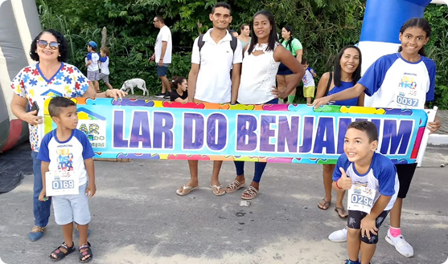

<section class="container-section">
  <div class="container my-5 px-md-5">
    <h2 class="text-center font-titulo fs-1 fw-bold">
      Faça Parte Dessa Transformação
    </h2>
    <p class="text-center mb-4 fw-bold">
      Ajude o Lar do Benjamim a continuar cuidando de quem mais precisa
    </p>

    <div class="row align-items-center px-md-5">
      <div class="col-12 col-md-6 mb-4 mb-md-0">
        
      </div>

      <div class="col-12 col-md-6">
        <p class="texto-voluntario">
          No Lar do Benjamim, cada sorriso cuidado, cada atividade realizada e
          cada conquista celebrada só acontecem graças a pessoas com o coração
          aberto para fazer a diferença.<br />
          Somos um time formado 100% por voluntários pessoas que doam seu tempo,
          talento e carinho para acolher, ensinar e caminhar junto com crianças
          com transtornos do neurodesenvolvimento e suas famílias.<br />
          E a verdade é que sempre precisamos de mais mãos. Mais ouvidos. Mais
          abraços. Se você acredita em um mundo mais inclusivo e humano, aqui é
          um ótimo lugar para começar.<br />
        </p>
        <div class="text-center text-md-start">
          <a
            href="../pages/doador.html#cards-doador"
            class="btn btn-primary mt-1 botao-destaque"
            aria-label="Acesse a página de voluntariado do Lar do Benjamim"
          >
            Seja voluntário!
          </a>
        </div>
      </div>
    </div>
  </div>
</section>
